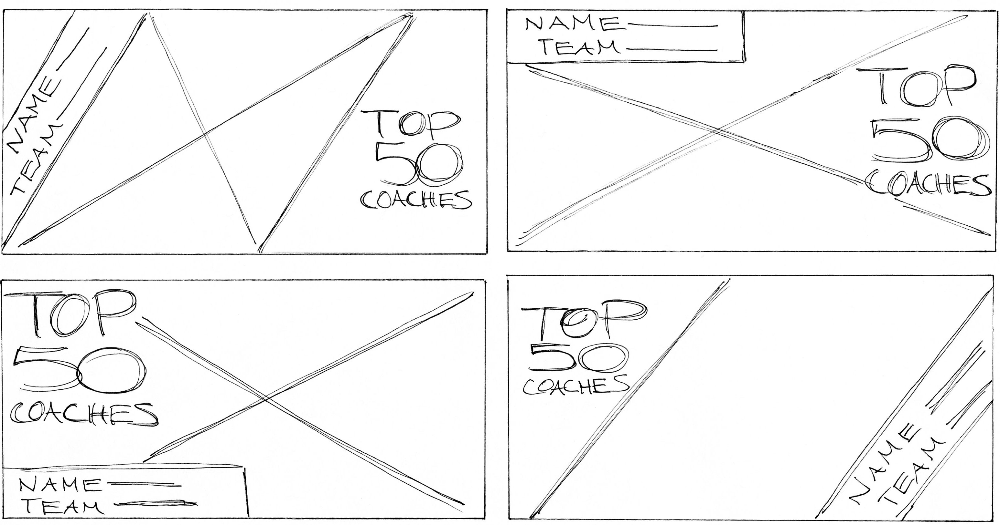

Top 50 Coaches
Social Media Design
This past summer I was a sports intern at the Tampa Bay Times. In addition to writing for the sports department, I created graphics for Twitter to promote the newspaper’s content. To promote the newspaper's coverage of the the all-time top 50 professional or high school coaches in the Pinellas, Hillsborough, Pasco or Hernando counties, graphics were posted on the newspaper's Twitter account.

Choosing to darken the stripes allowed the name, team, and "Top 50 Coaches" type to pop out more. Below are samples of the graphics created with the finalized template.